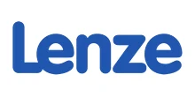

Поставляем оригинальные редукторы и мотор-редукторы Lenze под заказ + изготовим аналог дешевле. Замена по присоединительным размерам — без переделки оборудования. Цена и срок — по запросу.
Оригинальные редукторы и мотор-редукторы Lenze — под заказ, с гарантией производителя. Пришлите модель или шильд — сообщим цену и срок. Нужно дешевле — изготовим аналог (см. ниже).
| Серия Lenze | Типоразмеры (поставляем оригинал) |
|---|---|
| g500 — модульная серия | соосные (g500-H), плоские (g500-S), конические (g500-B), червячные (g500-W) |
| GST / GKS / GKR — коническо- и цилиндро-редукторы | GST04…GST14, GKS04…GKS14, GKR04…GKR06 |
| GFL — плоские | GFL04, GFL05, GFL06, GFL07, GFL09, GFL11, GFL14 |
| Двигатели в сборе | MD / MF |
Цена и наличие оригинала — по запросу. Не оферта.
Заменяем червячные мотор-редукторы Lenze на аналоги собственного производства (серии Ч, 2Ч, МЧ, МЧ2). Узел встаёт на штатное место по присоединительным и габаритным размерам — переходные фланцы и спецвалы изготавливаем по вашим чертежам.

| Заменяем серии Lenze | GFL, GST, GKR, GKS |
|---|---|
| Мощность двигателя | 0.12–90 кВт |
| Передаточное число | 3.77–990 |
| Наш аналог | Редукторы серии ZR (плоские цилиндрические, соосные, конические) |
| Гарантия | 24 месяца |
| Срок | Отгрузка со склада от 3 дней, изготовление от 5 рабочих дней |
Совпадают присоединительные размеры, валы и фланцы — узел встаёт на штатное место.
Вдвое выше среднерыночной.
Отгрузка со склада от 3 дней — не ждать импорт месяцами.
Пришлите фото шильда или модель — подберём аналог за 15 минут.
Подбор по типоразмеру: каждой модели Lenze соответствует наш редуктор серии ZR. Точную замену по вашей модели или шильду подтвердит инженер — пришлите шильд или опишите задачу.
| Модель Lenze | Наш аналог |
|---|---|
| Плоские цилиндрические мотор-редукторы | |
| GFL04 | ZR 636 |
| GFL05 | ZR 646 |
| GFL06 | ZR 656, ZR 666 |
| GFL07 | ZR 676 |
| GFL09 | ZR 686 |
| GFL11 | ZR 6106 |
| GFL14 | ZR 6126 |
| Соосные мотор-редукторы | |
| GST06 | ZR 939 |
| GST07 | ZR 949 |
| GST09 | ZR 979 |
| GST11 | ZR 999 |
| GST14 | ZR 9139 |
| Конические мотор-редукторы | |
| GKR04 GKS04 GSS04 | ZR 838 |
| GKR05 GKS05 GSS05 | ZR 848 |
| GKR06 GKS06 GSS06 | ZR 858 |
| GKS06 GSS06 | ZR 868 |
| GKS07 GSS07 | ZR 878 |
| GKS09 | ZR 888 |
| GKS11 | ZR 898, ZR 8108 |
| GKS14 | ZR 8128 |
Оставьте контакты или пришлите модель/шильд — инженер подберёт аналог, рассчитает присоединительные размеры и пришлёт КП.
Получить КПДа, оригинальные редукторы и мотор-редукторы Lenze поставляем под заказ, с гарантией производителя. Пришлите модель или шильд — сообщим срок поставки и цену по запросу. Если нужно быстрее или дешевле, изготовим аналог собственного производства.
Аналог изготавливается по присоединительным и габаритным размерам оригинала Lenze (g500, GST, GKS, GKR), поэтому встаёт на штатное место без переделки оборудования. Отличается ценой и сроком — аналог дешевле и отгружается быстрее, при сопоставимых характеристиках и гарантии 24 месяца.
Пришлите фото шильда или укажите модель Lenze — инженер подберёт оригинал под заказ или аналог серии ZR по присоединительным размерам за 15 минут и рассчитает замену.
Цена на оригинал и аналог Lenze — по запросу: она зависит от серии, типоразмера, передаточного числа и сроков. Пришлите модель или шильд — рассчитаем стоимость и пришлём коммерческое предложение.
Габаритный аналог изготавливаем от 3 дней со склада или под заказ. Оригинал Lenze поставляем под заказ — срок зависит от модели и наличия, точные сроки сообщим при запросе.
Да, мотор-редукторы рассчитаны на работу с частотным преобразователем. Сообщите требуемый диапазон регулирования оборотов — подберём двигатель и комплектацию.
Передаём паспорт изделия, сертификаты и закрывающие документы — счёт-фактуру или УПД. Работаем по договору; для постоянных и серийных клиентов согласуем индивидуальные условия.
Да. Для производителей оборудования делаем серийные поставки с резервом на складе и фиксированной ценой по договору — приводная часть вашей серии всегда в наличии.
Lenze купить, оригинал под заказ или аналог дешевле? Завод Редукторов поставляет мотор-редуктор Lenze и изготавливает аналог Lenze по присоединительным размерам — без переделки оборудования. Подбор по модели или шильду, цена и сроки по запросу.
Lenze выпускает модульную серию редукторов g500 в исполнениях соосных (g500-H), плоских (g500-S), конических (g500-B) и червячных (g500-W), а также коническо- и цилиндро-редукторы серий GST, GKS и GKR. Эти узлы широко применяются в конвейерах, упаковочном и подъёмно-транспортном оборудовании, поэтому при выходе из строя важно подобрать корректную замену по присоединительным и габаритным размерам, передаточному числу и мощности двигателя.
Поставляем оригинальные редукторы и мотор-редукторы Lenze (g500, GST, GKS, GKR, GFL) под заказ, с гарантией производителя. Пришлите модель или шильд — сообщим срок поставки и цену по запросу. Подробнее об импортозамещении — на странице импортозамещение редукторов.
Если нужен аналог Lenze дешевле и быстрее, изготовим редуктор серии ZR по присоединительным размерам оригинала — узел встаёт на штатное место без переделки оборудования. Запустите подбор по модели или шильду, и инженер рассчитает замену.
| Серии Lenze | g500 (H/S/B/W), GST / GKS / GKR |
|---|---|
| Поставка | Оригинал под заказ + аналог собственного производства |
| Цена | По запросу |
| Подбор | По модели и шильду |